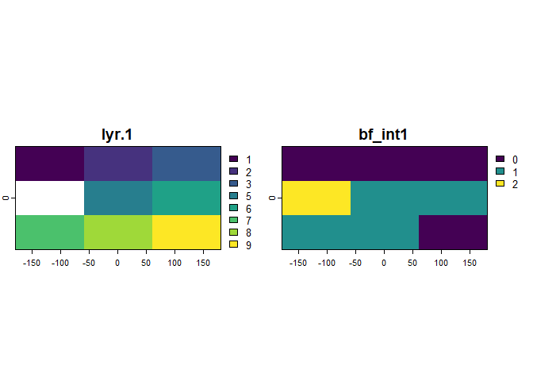

Overview
This package is designed to capture the computational footprint of any model workflow or output. It achieves this by encoding computational decisions into sequences of bits (i.e., bitfields) that are transformed to integer values. This allows storing a range of information into a single column of a table or a raster layer, which can be useful when documenting
- the metadata of any dataset by collecting information throughout the dataset creation process,
- intermediate data that accrue along a workflow, or
- a set of output metrics or parameters.
- …
Think of a bit as a switch representing off and on states. A combination of a pair of bits can store four states, and n bits can accommodate 2^n states. These states could be the outcomes of (simple) tests that document binary responses, cases or numeric values. The data produced in that way could be described as meta-analytic or meta-algorithmic data, because they can be re-used to extend an analysis pipeline or algorithm by downstream applications.
Installation
Install the official version from CRAN:
# install.packages("bitfield")Install the latest development version from github:
devtools::install_github("bitfloat/bitfield")Examples
library(bitfield)
library(dplyr, warn.conflicts = FALSE)
library(terra, warn.conflicts = FALSE)
#> terra 1.7.78Let’s first load an example dataset
bf_tbl$x # invalid (259) and improbable (0) coordinate value
#> [1] 25.3 27.9 27.8 27.0 259.0 27.3 26.1 26.5 0.0 25.7
bf_tbl$y # Inf and NaN value
#> [1] 59.5 58.1 57.8 59.2 Inf 59.1 58.4 59.0 0.0 NaN
bf_tbl$commodity # NA value or mislabelled term ("honey")
#> [1] "soybean" "maize" NA "maize" "honey" "maize" "soybean"
#> [8] "maize" "soybean" "maize"
bf_tbl$yield # correct range?!
#> [1] 11.192915 11.986793 13.229386 4.431376 12.997422 8.548882 11.276921
#> [8] 10.640715 9.010452 13.169897
bf_tbl$year # flags (*r)
#> [1] "2021" NA "2021r" "2021" "2021" "2021" "2021" "2021" "2021"
#> [10] "2021"
# and there is a set of valid commodity terms
validComm <- c("soybean", "maize")The first step is in creating what is called registry in bitfield. This registry captures all the information required to build the bitfield
reg <- bf_registry(name = "yield_QA",
description = "this example bitfield documents quality assessment in a table of yield data.")Then, individual bit flags need to be grown by specifying the respective protocols. These protocols create flags for the most common applications, such as na (to test for missing values), case (to test what case/class the observations are part of),nChar (to count the number of characters of a variable), or numeric to encode a numeric (floating point) variable as bit sequence.
# tests for longitude availability
reg <-
bf_map(protocol = "na", # the protocol with which to build the bit flag
data = bf_tbl, # specify where to determine flags
x = x, # ... and which variable to test
pos = 1, # specify at which position to store the flag
registry = reg) # provide the registry to update
# test which case an observation is part of
reg <-
bf_map(protocol = "case", data = bf_tbl,
yield >= 11, yield < 11 & yield > 9, yield < 9 & commodity == "maize",
registry = reg)
# test the length (number of characters) of values
reg <-
bf_map(protocol = "nChar", data = bf_tbl, x = y, registry = reg)
# store a simplified (e.g. rounded) numeric value
reg <-
bf_map(protocol = "numeric", data = bf_tbl, x = yield, format = "half",
registry = reg)These are functions that represent the possible encoding types boolean (bool), enumerated cases (enum), (signed) integers (int), and numeric floating-point (num). The encoding type determines various storage parameters of the resulting flags. This is, however, not yet the bitfield. The registry is merely the instruction manual, so to speak, to create the bitfield and encode it as integer, with the function bf_encode().
reg
#> width 22
#> flags 4 -|--|---|----------------
#>
#> pos encoding type col
#> 1 0.0.1/0 na x
#> 2 0.0.2/0 case1 yield-commodity
#> 4 0.0.3/0 nChar y
#> 7 1.5.10/15 numeric yield
(field <- bf_encode(registry = reg))
#> # A tibble: 10 × 1
#> bf_int1
#> <int>
#> 1 805272
#> 2 805374
#> 3 805533
#> 4 1852526
#> 5 739967
#> 6 1853510
#> 7 805283
#> 8 1198418
#> 9 1132673
#> 10 739989The bitfield can be decoded based on the registry with the function bf_decode() at a later point in time or another workflow, where the metadata contained in the bitfield can be used or extended in a downstream application.
flags <- bf_decode(x = field, registry = reg, sep = "-")
#> # A tibble: 7 × 4
#> # Rowwise:
#> pos name flag desc
#> <chr> <chr> <chr> <chr>
#> 1 1 na_x x "'x' contains NA-values."
#> 2 2:3 case1_yield-commodity 00 "The observation has case NULL."
#> 3 2:3 case1_yield-commodity 01 "The observation has case 'yield…
#> 4 2:3 case1_yield-commodity 10 "The observation has case 'yield…
#> 5 2:3 case1_yield-commodity 11 "The observation has case 'yield…
#> 6 4:6 nChar_y xxx "'y' is that many characters lon…
#> 7 7:22 numeric_yield xxxxxxxxxxxxxxxx "'yield' is encoded as floating-…
# -> prints legend by default, which is also available in bf_env$legend
bf_tbl |>
bind_cols(flags) |>
kable()| x | y | commodity | yield | year | bf_bin |
|---|---|---|---|---|---|
| 25.3 | 59.5 | soybean | 11.192915 | 2021 | 0-01-100-0100100110011000 |
| 27.9 | 58.1 | maize | 11.986793 | NA | 0-01-100-0100100111111110 |
| 27.8 | 57.8 | NA | 13.229386 | 2021r | 0-01-100-0100101010011101 |
| 27.0 | 59.2 | maize | 4.431376 | 2021 | 0-11-100-0100010001101110 |
| 259.0 | Inf | honey | 12.997422 | 2021 | 0-01-011-0100101001111111 |
| 27.3 | 59.1 | maize | 8.548882 | 2021 | 0-11-100-0100100001000110 |
| 26.1 | 58.4 | soybean | 11.276921 | 2021 | 0-01-100-0100100110100011 |
| 26.5 | 59.0 | maize | 10.640715 | 2021 | 0-10-010-0100100101010010 |
| 0.0 | 0.0 | soybean | 9.010452 | 2021 | 0-10-001-0100100010000001 |
| 25.7 | NaN | maize | 13.169897 | 2021 | 0-01-011-0100101010010101 |
The column bf_bin, in combination with the legend, can be read one step at a time. For example, considering the first bit, we see that no observation has an NA value and considering the second bit, we see that observations 4 and 6 have a yield smaller than 9 and a commodity value “maize” (case 3 with binary value 11).
Moreover, more computation friendly, we can also separate the bitfield into distinct columns per flag and we can load the decoded values from the package environment bf_env.
bf_decode(x = field, registry = reg, verbose = FALSE)
#> # A tibble: 10 × 4
#> na_x `case1_yield-commodity` nChar_y numeric_yield
#> <chr> <chr> <chr> <chr>
#> 1 0 01 100 0100100110011000
#> 2 0 01 100 0100100111111110
#> 3 0 01 100 0100101010011101
#> 4 0 11 100 0100010001101110
#> 5 0 01 011 0100101001111111
#> 6 0 11 100 0100100001000110
#> 7 0 01 100 0100100110100011
#> 8 0 10 010 0100100101010010
#> 9 0 10 001 0100100010000001
#> 10 0 01 011 0100101010010101
# access values manually
ls(bf_env)
#> [1] "case1_yield-commodity" "legend" "na_x"
#> [4] "nChar_y" "numeric_yield"
bf_env[["nChar_y"]]
#> [1] 4 4 4 4 3 4 4 2 1 3Beware that numeric values that have been encoded in this way, likely have a lower precision than the input values (which may not be a problem in the frequent case where only rounded values are of interest). This can be adjusted by setting the respective parameters in the protocol that encodes numeric values (a vignette explaining this in detail will follow).
old <- options(pillar.sigfig = 7)
tibble::tibble(original = bf_tbl$yield,
bitfield = bf_env$numeric_yield)
#> # A tibble: 10 × 2
#> original bitfield
#> <dbl> <dbl>
#> 1 11.19292 11.1875
#> 2 11.98679 11.98438
#> 3 13.22939 13.22656
#> 4 4.431376 4.429688
#> 5 12.99742 12.99219
#> 6 8.548882 8.546875
#> 7 11.27692 11.27344
#> 8 10.64072 10.64062
#> 9 9.010452 9.007812
#> 10 13.16990 13.16406
options(old)Bitfields for raster data
An interesting use case is in encoding metadata for modelled gridded data. This is possible simply by calling the .rast() function to wrap the gridded object, applying the functions of this package, and overwriting the integer values of the bitfield into a copy of the original gridded object.
# example data
bf_rst <- rast(nrows = 3, ncols = 3,
vals = as.integer(c(1, 2, 3, NA, 5, 6, 7, 8, 9)))
# build the registry
reg <- bf_registry(name = "raster_meta",
description = "this example bitfield documents metadata for a raster object.")
reg <- bf_map(protocol = "na",
data = .rast(bf_rst), x = lyr.1)
reg <- bf_map(protocol = "range", data = .rast(bf_rst), x = lyr.1, min = 4,
max = 8, name = "range_lyr.1", na.val = FALSE, registry = reg)
# encode as bitfield (and make raster out of it)
field <- bf_encode(registry = reg)
rst_field <- rast(bf_rst, vals = field, names = names(field))
# decode (gridded) bitfield somewhere downstream
flags <- bf_decode(x = values(rst_field, dataframe = TRUE), registry = reg)
#> # A tibble: 2 × 4
#> # Rowwise:
#> pos name flag desc
#> <chr> <chr> <chr> <chr>
#> 1 1 na_lyr.1 x 'lyr.1' contains NA-values.
#> 2 2 range_lyr.1 x The 'lyr.1' values are between '4' and '8'.
bind_cols(flags, field)
#> # A tibble: 9 × 3
#> na_lyr.1 range_lyr.1 bf_int1
#> <chr> <chr> <int>
#> 1 0 0 0
#> 2 0 0 0
#> 3 0 0 0
#> 4 1 0 2
#> 5 0 1 1
#> 6 0 1 1
#> 7 0 1 1
#> 8 0 1 1
#> 9 0 0 0
plot(c(bf_rst, rst_field))